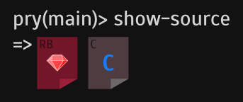

Pages 31
- Home
- Available plugins
- Command system
- Contributing
- Custom commands
- Customization and configuration
- Documentation browsing
- Editor integration
- Exceptions
- FAQ
- History
- Hooks
- Live help
- Plugin Proposals
- Plugins
- pry de
- Pry ecosystem
- Pry rc
- pry zle
- Remote sessions
- ruby dev.el
- Runtime invocation
- Setting up Rails or Heroku to use Pry
- Shell Integration
- Source browsing
- Special Locals
- State navigation
- Terse Start
- Use Cases
- User Input
- Windows support
- Show 16 more pages…
Clone this wiki locally
Source browsing

Quick Menu:
- View method and class source code
- View the source code for Pry commands
- View source for Ruby Core (MRI C code)
- View Rubinius core source code
- View the source of the current method
- View the source of the Lambdas and Procs
- View the source of classes of arbitrary objects
- View the source of all definitions and monkey-patches of classes or modules
Overview
One of Pry's killer features is its ability to display source code for methods and classes. Pry does this without relying on any external utilities. Source browsing is an invaluable tool when you are coming to grips with a new code base and it comes into its own when the library you are exploring has little or no documentation.
View method and class source code with show-source
The show-source command is capable of showing source code for classes/modules and methods. Simply typing show-source method_name will pull the source for the method and display it with syntax highlighting. As a convenience, Pry looks up both instance methods and class methods using this syntax, with priority given to instance methods.
Alternatively, if you pass in a class (or module), Pry will show the source for that class, e.g. show-source MyClass.
The ri method syntax is also supported. This enables you to specify both a context and a method. In ri syntax C#m specifies the instance method m on the class C. And obj.m selects the method (or class method) m on the object obj.
Note that the context and method are resolved dynamically (with respect to the current context) and so constructions such as MyClass.new.my_method are valid.
Also note that methods defined inside Pry itself are also viewable using show-source.
The following options are supported:
- Use the
-soption to select the super method. You can repeat-ssto get to the super method's super method. - Use the
-loption to include line numbers - Use the
-boption to include line numbers, but start numbering at 1 (useful when used withplay) - Use the
-aoption to show source for all definitions and monkey-patches of the module/class
Aliases: $, show-method
Example (recorded) :
[1] pry(main)> cd Pry
[2] pry(Pry):1> show-source rep
From: /home/curacao/.gem/ruby/1.9.3/gems/pry-0.9.11.4/lib/pry/pry_instance.rb @ line 252:
Owner: Pry
Visibility: public
Number of lines: 8
def rep(target=TOPLEVEL_BINDING)
target = Pry.binding_for(target)
result = re(target)
Pry.critical_section do
show_result(result)
end
end
[3] pry(Pry):1>
Example (recorded): showing a class' source
[1] pry(main)> show-source Pry
From: /home/curacao/.gem/ruby/1.9.3/gems/pry-0.9.11.4/lib/pry/pry_instance.rb
Number of lines: 737
class Pry
attr_accessor :input
attr_accessor :output
attr_accessor :commands
attr_accessor :print
:
Example (recorded): with ri syntax
[1] pry(main)> require 'set'
=> true
[2] pry(main)> show-source Set#replace -l
From: /opt/rubies/ruby-1.9.3-p327/lib/ruby/1.9.1/set.rb @ line 132:
Owner: Set
Visibility: public
Number of lines: 10
132: def replace(enum)
133: if enum.instance_of?(self.class)
134: @hash.replace(enum.instance_variable_get(:@hash))
135: else
136: clear
137: merge(enum)
138: end
139:
140: self
141: end
[3] pry(main)>
Example (recorded): methods defined inside Pry
[1] pry(main)> def up_so_floating
[1] pry(main)* puts "anyone lives in a pretty how town"
[1] pry(main)* end
=> nil
[2] pry(main)> show-source up_so_floating
From: (pry) @ line 1:
Owner: Object
Visibility: private
Number of lines: 3
def up_so_floating
puts "anyone lives in a pretty how town"
end
[3] pry(main)>
Example (recorded): superclass methods (with help of -s or --super flag).
[1] pry(main)> class Parent
[1] pry(main)* def foo
[1] pry(main)* :original
[1] pry(main)* end
[1] pry(main)* end
=> nil
[2] pry(main)> class Child < Parent
[2] pry(main)* def foo
[2] pry(main)* :modified
[2] pry(main)* end
[2] pry(main)* end
=> nil
[3] pry(main)> show-source Child#foo -s
From: (pry) @ line 2:
Owner: Parent
Visibility: public
Number of lines: 3
def foo
:original
end
[4] pry(main)> show-source Child#foo
From: (pry) @ line 7:
Owner: Child
Visibility: public
Number of lines: 3
def foo
:modified
end
[5] pry(main)>
Advanced example (recorded):
[1] pry(main)> require 'delegate'
=> false
[2] pry(main)> show-source SimpleDelegator#__getobj__
From: /opt/rubies/ruby-1.9.3-p327/lib/ruby/1.9.1/delegate.rb @ line 264:
Owner: SimpleDelegator
Visibility: public
Number of lines: 3
def __getobj__
@delegate_sd_obj
end
[3] pry(main)> show-source SimpleDelegator#__getobj__ --super
From: /opt/rubies/ruby-1.9.3-p327/lib/ruby/1.9.1/delegate.rb @ line 141:
Owner: Delegator
Visibility: public
Number of lines: 3
def __getobj__
raise NotImplementedError, "need to define `__getobj__'"
end
View the source code for Pry commands
In keeping with Pry's philosophy of making all source code accessible, even command source is viewable. Simply use show-source command_name.
Example (recorded):
[1] pry(main)> show-source gem-list
From: /home/curacao/.gem/ruby/1.9.3/gems/pry-0.9.11.4/lib/pry/commands/gem_list.rb
Number of lines: 29
class Command::GemList < Pry::ClassCommand
match 'gem-list'
group 'Gems'
description 'List and search installed gems.'
banner <<-'BANNER'
Usage: gem-list [REGEX]
List all installed gems, when a regex is provided, limit the output to those
that match the regex.
BANNER
def process(pattern = nil)
pattern = Regexp.compile(pattern || '')
gems = Rubygem.list(pattern).group_by(&:name)
gems.each do |gem, specs|
specs.sort! do |a,b|
Gem::Version.new(b.version) <=> Gem::Version.new(a.version)
end
versions = specs.each_with_index.map do |spec, index|
index == 0 ? text.bright_green(spec.version.to_s) : text.green(spec.version.to_s)
end
output.puts "#{text.default gem} (#{versions.join ', '})"
end
end
end
[2] pry(main)>
View source for Ruby Core (MRI C code)
When the pry-doc plugin is installed (gem install pry-doc) the C source for Ruby core methods (MRI) become available. As with pure Ruby methods, the show-source command is used to display the code.
Example (recorded):
[1] pry(main)> show-source Object#extend
From: eval.c (C Method):
Owner: Kernel
Visibility: public
Number of lines: 16
static VALUE
rb_obj_extend(int argc, VALUE *argv, VALUE obj)
{
int i;
if (argc == 0) {
rb_raise(rb_eArgError, "wrong number of arguments (at least 1)");
}
for (i = 0; i < argc; i++)
Check_Type(argv[i], T_MODULE);
while (argc--) {
rb_funcall(argv[argc], rb_intern("extend_object"), 1, obj);
rb_funcall(argv[argc], rb_intern("extended"), 1, obj);
}
return obj;
}
[2] pry(main)>
View Rubinius core source code
Rubinius is a great platform for Rubyists as nearly everything is implemented in pure Ruby. Pry takes advantage of this and the show-source command can display Rubinius core method source almost as easily as the source for standard methods.
Example (recorded):
[1] pry(main)> show-source Enumerable#group_by
From: /opt/rubies/rubinius-2.0.0-rc1/kernel/common/enumerable.rb @ line 274:
Owner: Enumerable
Visibility: public
Number of lines: 15
def group_by
return to_enum(:group_by) unless block_given?
h = {}
each do
o = Rubinius.single_block_arg
key = yield(o)
if h.key?(key)
h[key] << o
else
h[key] = [o]
end
end
h
end
View the source of the current method
When Pry is invoked at runtime from inside a method (using binding.pry) the source for the method can be viewed by typing simply show-source. No method name is required as the information on the current method is contained in the Binding object.
(recorded)
In the Ruby file:
def moon
puts "If the gypsies come,"
puts "they will use your heart"
puts "to make white necklaces and rings."
binding.pry
endIn the Pry session:
[1] pry(main)> show-source
From: /home/curacao/moon.rb @ line 1:
Owner: Object
Visibility: private
Number of lines: 6
def moon
puts "If the gypsies come,"
puts "they will use your heart"
puts "to make white necklaces and rings."
binding.pry
end
[2] pry(main)>
View the source of the Lambdas and Procs
Pry can show source code of any Lambda or Proc object.
Example (recorded): defined inside Pry
[1] pry(main)> my_lambda = lambda { :hello_lambda! }
=> #<Proc:0x9f977e4@(pry):1 (lambda)>
[2] pry(main)> show-source my_lambda
From: (pry)
Number of lines: 1
my_lambda = lambda { :hello_lambda! }
[3] pry(main)> my_proc = proc { :hello_proc! }
=> #<Proc:0xa7f3500@(pry):2>
[4] pry(main)> show-source my_proc
From: (pry)
Number of lines: 1
my_proc = proc { :hello_proc! }
[5] pry(main)>
Example (recorded): defined in a file
[1] pry(main)> show-source Pry::DEFAULT_EXCEPTION_HANDLER
From: /home/curacao/.gem/ruby/1.9.3/gems/pry-0.9.11.4/lib/pry.rb
Number of lines: 8
DEFAULT_EXCEPTION_HANDLER = proc do |output, exception, _|
if UserError === exception && SyntaxError === exception
output.puts "SyntaxError: #{exception.message.sub(/.*syntax error, */m, '')}"
else
output.puts "#{exception.class}: #{exception.message}"
output.puts "from #{exception.backtrace.first}"
end
end
[2] pry(main)>
View the source of classes of arbitrary objects
It is possible to view a class definition of almost every Ruby object. The exception is empty classes. A class must define at least one method (either an instance method or a class method).
Example (recorded): objects whose classes are defined inside Pry
[1] pry(main)> class Hello
[1] pry(main)* def world
[1] pry(main)* end
[1] pry(main)* end
=> nil
[2] pry(main)> hello = Hello.new
=> #<Hello:0x9a2d27c>
[3] pry(main)> show-source hello
From: (pry)
Number of lines: 4
class Hello
def world
end
end
[4] pry(main)>
Example (recorded): objects whose classes are defined in a file
[1] pry(main)> require 'tempfile'
=> false
[2] pry(main)> tf = Tempfile.new('hello')
=> #<File:/tmp/hello20130201-7601-1qyalim>
[3] pry(main)> show-source tf
From: /opt/rubies/ruby-1.9.3-p327/lib/ruby/1.9.1/tempfile.rb
Number of lines: 269
class Tempfile < DelegateClass(File)
MAX_TRY = 10 # :nodoc:
include Dir::Tmpname
# call-seq:
# new(basename, [tmpdir = Dir.tmpdir], [options])
#
# Creates a temporary file with permissions 0600 (= only readable and
# writable by the owner) and opens it with mode "w+".
:
View the source of all definitions and monkey-patches of classes or modules
Note that Pry assumes a class is only monkey-patched at most once per file, so will not find multiple monkey-patches in the same file.
Example (recorded):
[1] pry(main)> edit a.rb
[2] pry(main)> edit b.rb
[3] pry(main)> show-source Foo
From: /home/curacao/a.rb
Number of lines: 5
class Foo
def one
end
end
[4] pry(main)> show-source Foo -a
Found 2 candidates for `Foo` definition:
Candidate 1/2: /home/curacao/a.rb @ line 1:
Number of lines: 5
class Foo
def one
end
end
Candidate 2/2: /home/curacao/b.rb @ line 1:
Number of lines: 5
class Foo
def two
end
end
[5] pry(main)>